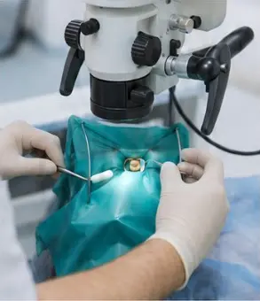
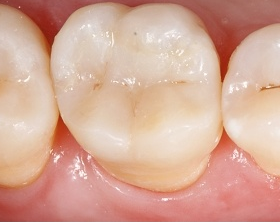

Péče o detail
Vašim zubům věnujeme čas a pozornost, které potřebují.
Zubní ordinace v Ostravě
Pečlivé ošetření kořenových kanálků, rekonstrukce zubů a dostatek času na každého pacienta.
Vašim zubům věnujeme čas a pozornost, které potřebují.
Pracujeme pod operačním mikroskopem a využíváme ověřené metody.
Vysvětlíme možnosti léčby, vyslechneme vaše obavy a zodpovíme otázky.
Zaměřujeme se především na záchranu komplikovaných zubů, přesnou diagnostiku a jejich funkční a estetickou rekonstrukci.

Naše hlavní specializace
Zachraňujeme zuby s postiženou zubní dření i zuby, u nichž předchozí ošetření nevedlo k hojení. Pracujeme pod operačním mikroskopem, v izolaci koferdamem a s důrazem na důkladné vyčištění a utěsnění kořenového systému.

Potřebujete posoudit konkrétní zub nebo doporučený léčebný postup? Nález s vámi projdeme, vysvětlíme možnosti léčby a předpokládanou cenu. Pro konzultaci nemusíte být naším stálým pacientem.

Poškozenému zubu nebo zubu po ošetření kořenových kanálků vracíme tvar, pevnost a funkci. Podle rozsahu poškození volíme estetickou výplň, polokorunku (onlay nebo overlay) či korunku.
O nás
Jsme soukromá zubní ordinace v Ostravě. Pracujeme pod operačním mikroskopem, používáme moderní vybavení a každému pacientovi věnujeme potřebný čas.
MUDr. Martin Dančík vede ordinaci od roku 2013 a specializuje se na endodoncii. S Evou Podhorskou tvoří sehraný tým, který dbá na klidný průběh ošetření a srozumitelnou komunikaci.
Profesní profil
zubní lékař
Absolvent Lékařské fakulty Univerzity Komenského v Bratislavě (2004). Profesní zkušenosti získal v Česku, Irsku a na Slovensku. Od roku 2013 vede zubní ordinaci Dentdelion v Ostravě. Zaměřuje se především na endodoncii a reendodoncii pod operačním mikroskopem. Je aktivním členem České endodontické společnosti a podílí se na odborném vzdělávání zubních lékařů.
Profesní profil
asistentka zubního lékaře
Od roku 2013 pracuje v ordinaci Dentdelion jako asistentka zubního lékaře. Připravuje ordinaci a materiály, asistuje při ošetřeních pod operačním mikroskopem a pomáhá koordinovat každodenní chod pracoviště. Dbá na klidný průběh ošetření, přesnost a pohodlí pacientů. Pravidelně se účastní odborných kurzů a kongresů.
Po: 8:00–15:00
Út, St, Čt: 7:40–15:00
Pá: 8:00–10:00
Naše zdravotnické zařízení nemá smlouvy se zdravotními pojišťovnami.Další informace v ceníku.Informace o zpracování osobních údajů.